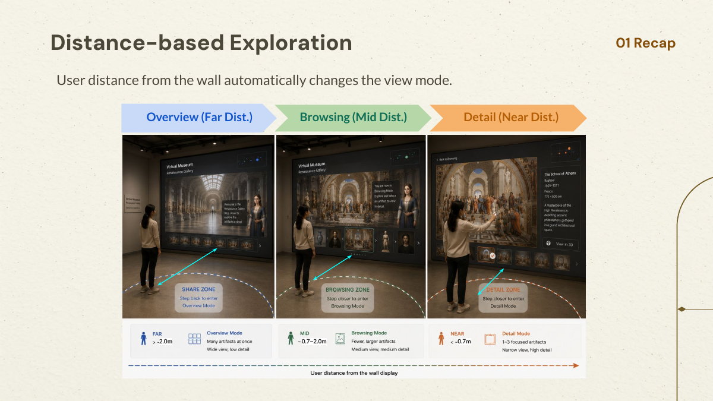

> 2.0 M
Overview
Scan 8–10 artifacts and understand the larger gallery.
01 HMD-Free Virtual Museum
ProxiWall turns natural walking into semantic zoom, letting museum visitors move from a gallery overview to artifact detail without a headset or controller.
02 / PROBLEM
Visitors naturally step back to understand a gallery and move closer to examine a work. ProxiWall makes this familiar museum behavior the interface itself.
03 / INTERACTION
Distance changes information hierarchy, lateral movement pans the gallery, and direct wall touch confirms a final choice.
> 2.0 M
Scan 8–10 artifacts and understand the larger gallery.
0.7–2.0 M
Compare 4–6 nearby artifacts through lateral movement.
≤ 0.7 M
Focus on 1–3 artifacts and touch the wall to select.
04 / LATEST DIRECTION

05 / PROJECT
The project evolved through proposals, expert interviews, implementation, and study design. Explore the full process across the site.